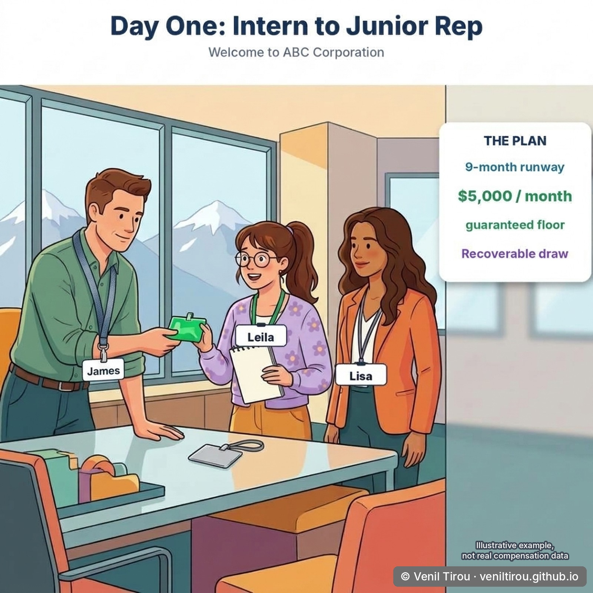
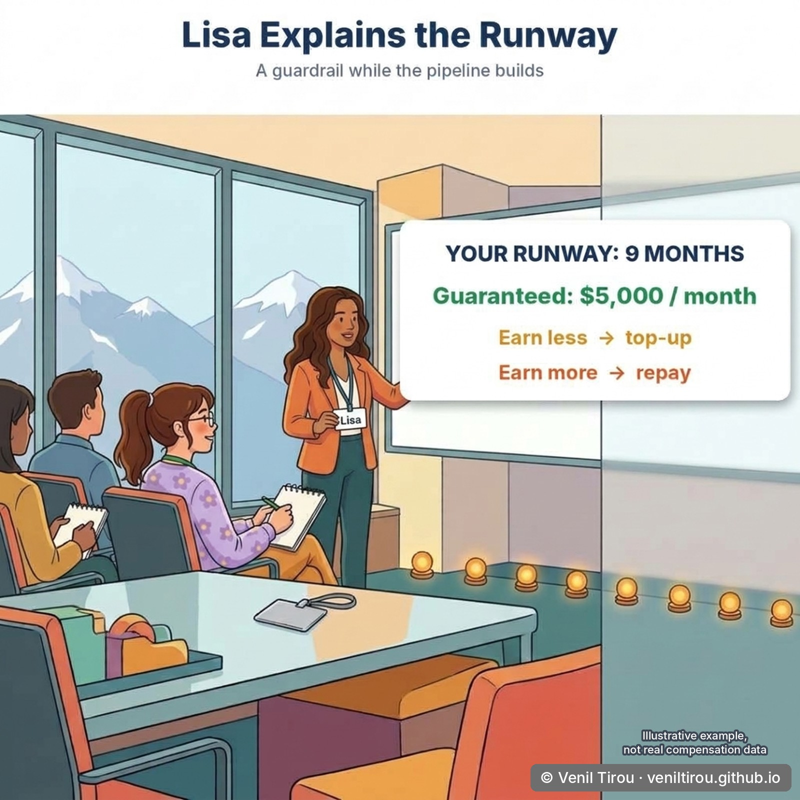
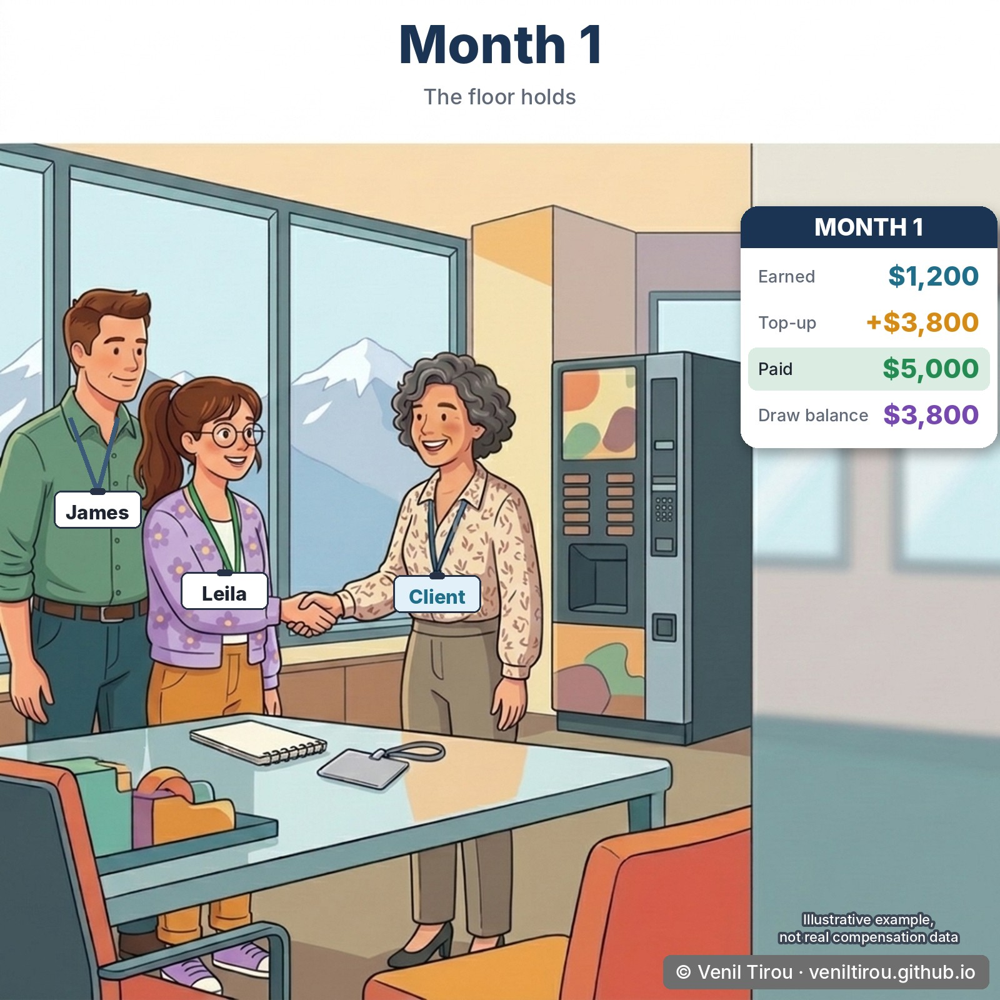
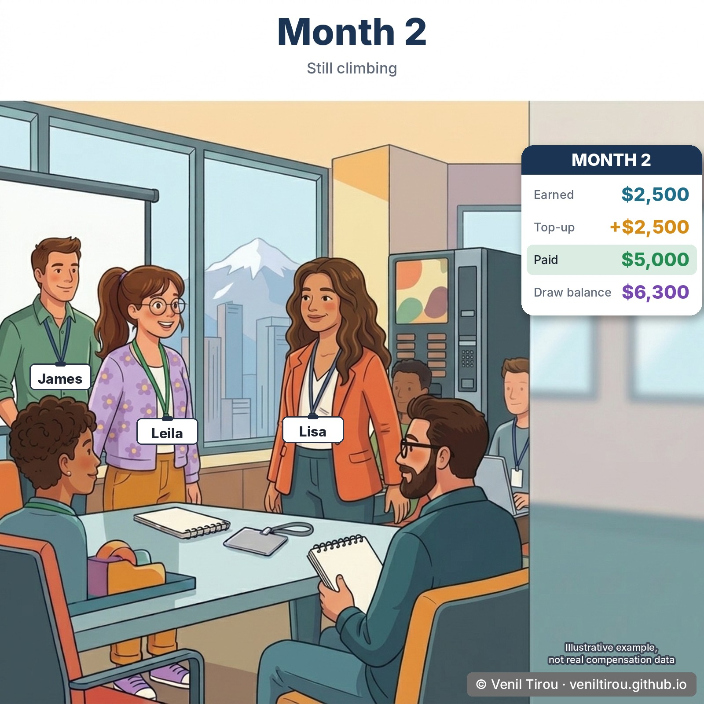
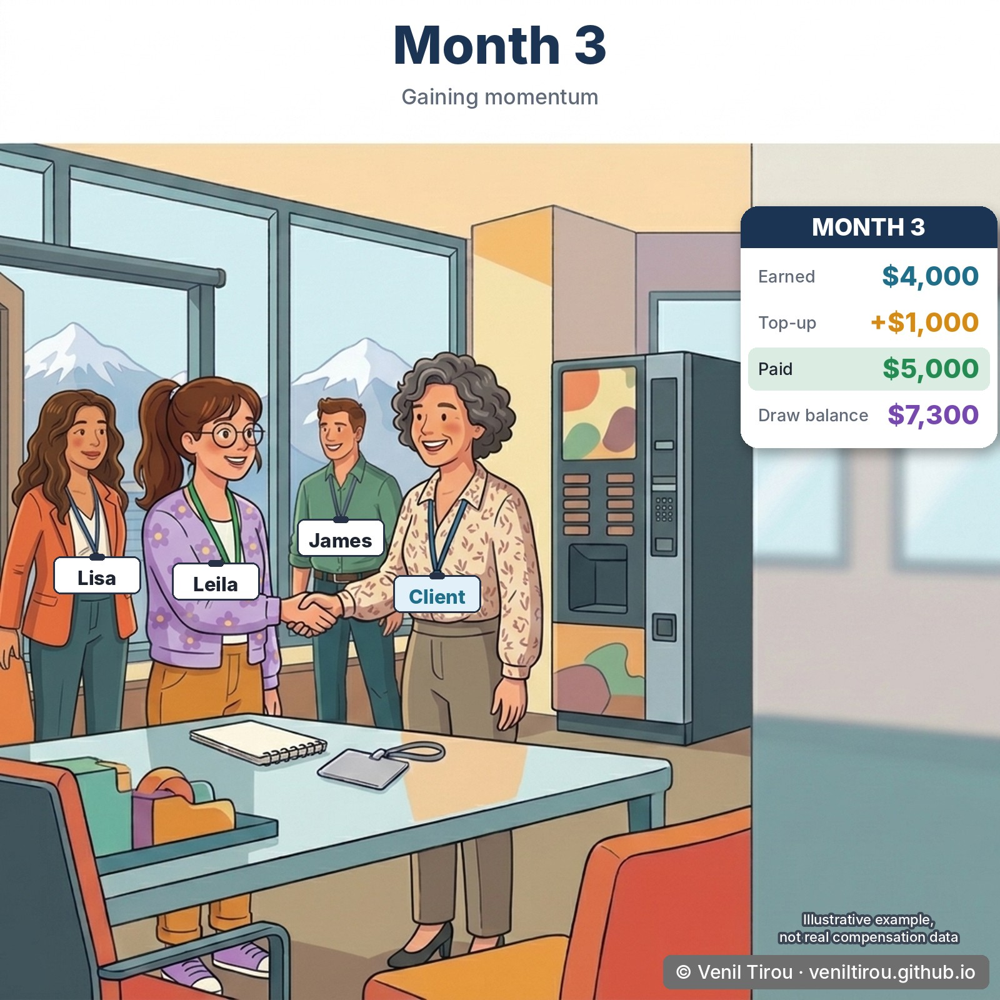
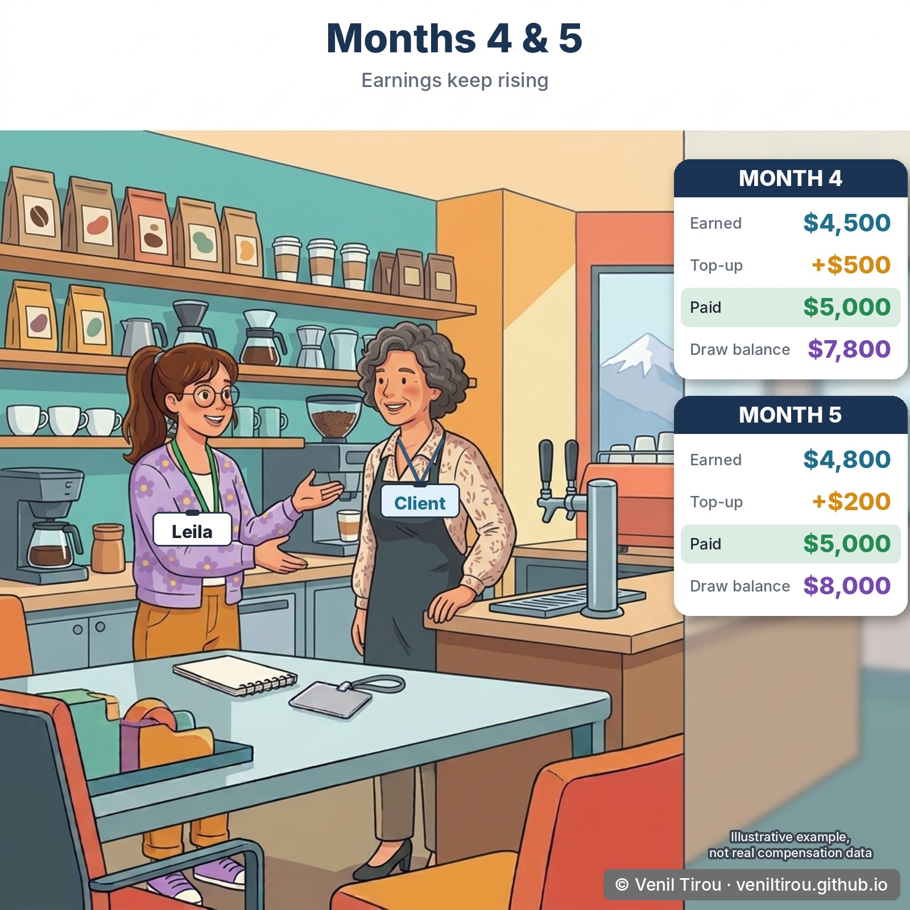
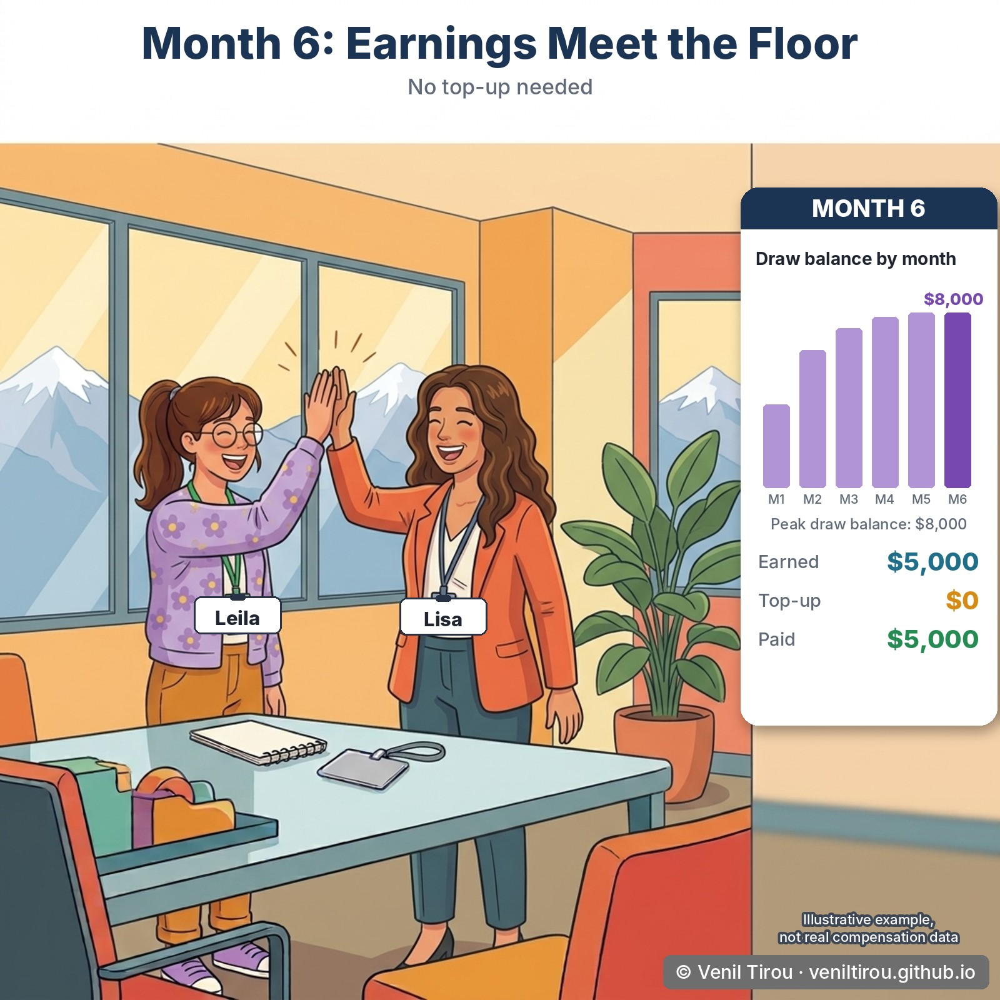
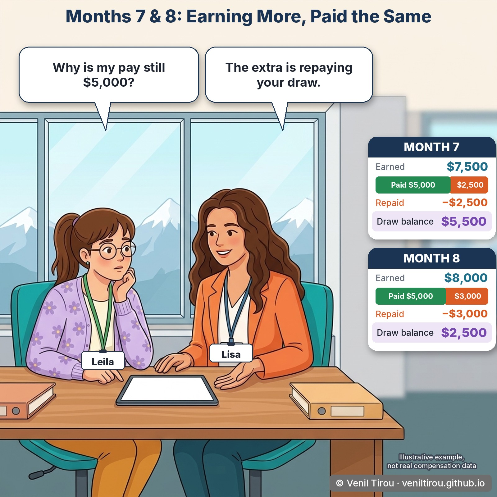
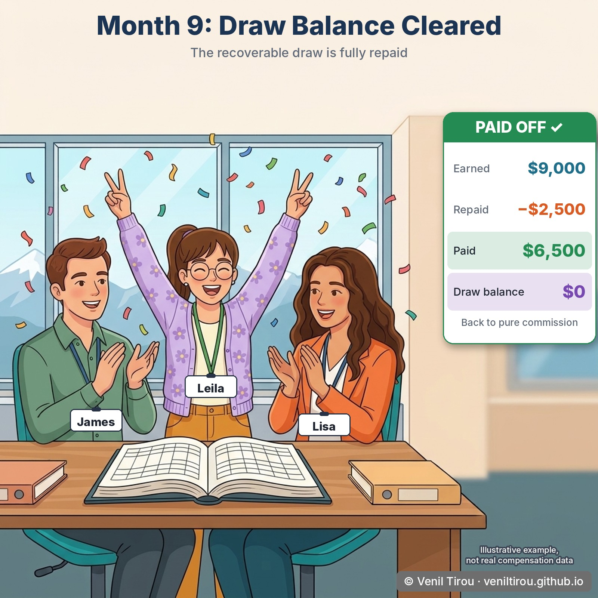
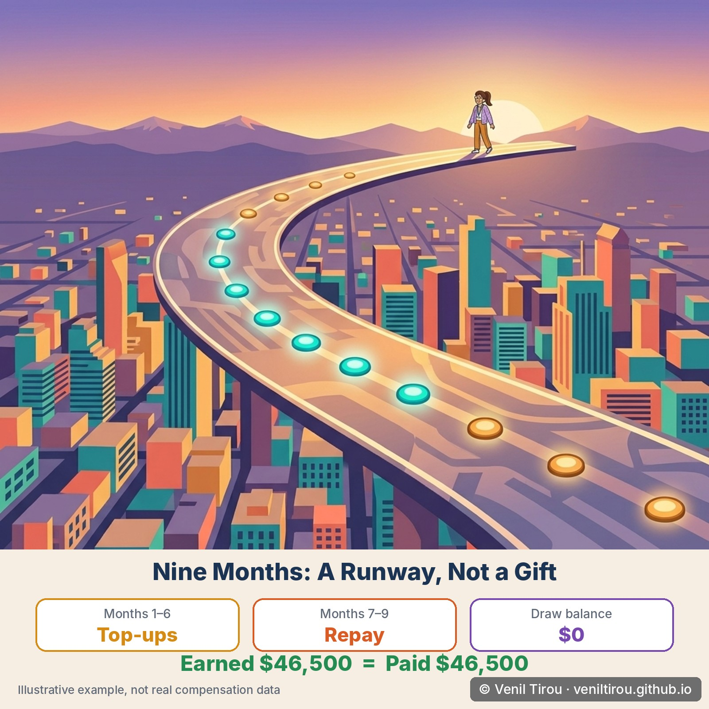

Business Scenario: Leila has just moved
from intern to junior sales rep at ABC Corporation, which sells
high-tech office vending solutions. Her work is renewals and cross-sell
with existing Denver accounts. James, a senior sales rep,
is the colleague she shadows. Lisa, ABC's compensation
analyst, configures the plan and explains it to her.
ABC's sales strategy gives new reps a nine-month runway:
a guaranteed floor of $5,000 a month, with the advance
recoverable from later earnings.
A note on the numbers: unlike Situation 1 of the previous
chapter, these figures are an illustrative example built for this story,
not Oracle's documented worked example. Every month reconciles: earned,
plus top-up or less recovery, equals paid, and the draw balance carries
forward. Real plans vary by company.
📱 On mobile? Pinch to zoom to read the numbers clearly.
Scene 1 — Day One: Intern to Junior Rep

What this shows: Leila has just moved from intern to junior sales rep at ABC Corporation. James, a senior sales rep, is welcoming her, and Lisa, the compensation analyst, is beside them. Leila's challenge is the one every new rep has: her pipeline is empty, so her commission will be small for months. ABC's answer is a draw with a $5,000-a-month floor and a nine-month runway. It is recoverable, which means the company is advancing money it expects to get back.
Scene 2 — Lisa Explains the Runway

What this shows: Lisa puts the whole rule on the whiteboard before the first payment: earn less than the floor and the company tops you up; earn more and the extra repays the advance. The ordering matters. A rep who understands this in week one will not be alarmed in month seven. The plan is the same one Situation 1 describes, a floor, a top-up and a recovery, only with a longer runway and a bigger floor.
Scene 3 — Month 1: The Floor Holds

What this shows: Leila earns $1,200 on a $5,000 floor, so the company tops her up by $3,800 and she is paid $5,000. The top-up is not a bonus. It is added to her draw balance, which now stands at $3,800. Leila is shaking hands with a Denver client here because her work is renewals and cross-sell with existing accounts, and those deals take months to close.
Scene 4 — Month 2: Still Climbing

What this shows: Earnings rise to $2,500, the top-up falls to $2,500, and she is again paid $5,000. The draw balance grows by the top-up: $3,800 + $2,500 = $6,300. Her earnings are improving, but while they sit below the floor the balance can only go up.
Scene 5 — Month 3: Gaining Momentum

What this shows: Earnings reach $4,000 and the top-up shrinks to $1,000. Pay is still $5,000 and the balance is now $7,300. Notice the pattern across three months: her pay never moves, while the balance behind it keeps climbing at a slowing rate.
Scene 6 — Months 4 and 5: Almost There

What this shows: Month 4: earned $4,500, top-up $500, balance $7,800. Month 5: earned $4,800, top-up $200, balance $8,000. The scene is a client visit at a coffee shop, where Leila is now winning real business. The top-ups are nearly gone, and the balance is about to stop growing.
Scene 7 — Month 6: Earnings Meet the Floor

What this shows: Leila earns exactly $5,000. No top-up is needed and no recovery has begun, so the balance stays at its peak of $8,000. This is the turning point of the whole runway. Up to here the company has been lending; from the next month, Leila starts paying it back out of earnings she would otherwise have been paid.
Scene 8 — Months 7 and 8: Earning More, Paid the Same

What this shows: This is the scene that surprises people. In month 7 Leila earns $7,500, yet is paid $5,000. The extra $2,500 is recovery, and the balance falls to $5,500. In month 8 she earns $8,000, $3,000 is recovered, she is paid $5,000 again, and the balance falls to $2,500. Her question, why is my pay still $5,000?, is the one every recoverable draw produces. It is the same guardrail as in Situation 1: while the draw runs, pay sits at the floor, and recovery takes only what is above it.
Scene 9 — Month 9: Draw Balance Cleared

What this shows: Leila earns $9,000, but only $2,500 remains to be recovered, so recovery stops there and she is paid $6,500, the first payment above the floor. The draw balance is now $0. This is the second guardrail from Situation 1: recovery never takes more than is owed. The runway then ends, and from the next period her pay reflects what she earns.
Scene 10 — Nine Months: A Runway, Not a Gift

What this shows: Months 1 to 6 added $8,000 of top-ups ($3,800 + $2,500 + $1,000 + $500 + $200 + $0). Months 7 to 9 recovered exactly $8,000 ($2,500 + $3,000 + $2,500). Across the nine months Leila earned $46,500 and was paid $46,500. A recoverable draw does not create money; it moves it earlier in time. Had the draw been non-recoverable, a genuine guarantee, she would have kept the $8,000 of top-ups on top of what she earned, for $54,500 in total. Which of the two applies is a decision made in plan design, not by the rep.
Why This Chapter Matters
The takeaway:
a recoverable draw does not change how much a rep earns; it changes
when the money arrives. Across nine months Leila earned $46,500 and
was paid $46,500. The top-ups in months 1 to 6 and the recoveries in months
7 to 9 each came to $8,000, and the draw balance ended at zero.
What decides all of it is a
handful of settings on the payment plan: the floor, the
duration, whether the draw is recoverable,
and when recovery begins. Change the recoverable setting
and the same nine months pay Leila $54,500 instead. That is why the
conversation worth having with a new rep happens in week one, not in month
seven, when a pay slip that stays at $5,000 while earnings reach $7,500 looks
like a mistake and is in fact the plan working.
Concepts Covered
| Concept | What it means | Scene |
|---|
| Runway | The period during which the draw applies. Here, nine months, after which the floor ends and pay follows earnings. | 1, 2, 9 |
| Floor (minimum payment) | The guaranteed amount a rep is paid each period while the draw runs. Here, $5,000. | 1, 2 |
| Top-up | The amount the company adds when earnings fall below the floor. It is an advance, not a bonus. | 3 to 6 |
| Draw balance | The running total of advances not yet recovered. In this story it climbs to $8,000 by month 5 and holds there in month 6. | 3 to 7 |
| Recovery | Earnings above the floor applied to the draw balance. Pay stays at the floor while recovery runs. | 8, 9 |
| Recovery cap | Recovery never takes more than the balance owed. In month 9 only $2,500 of $9,000 is recovered, and the rest is paid. | 9 |
| Recoverable vs non-recoverable draw | A recoverable draw is an advance repaid from later earnings. A non-recoverable draw is a true guarantee: the top-ups are kept. | 1, 10 |
| Payment plan | The object where the floor, duration, recoverable setting and recovery start are configured. | 1, 2 |